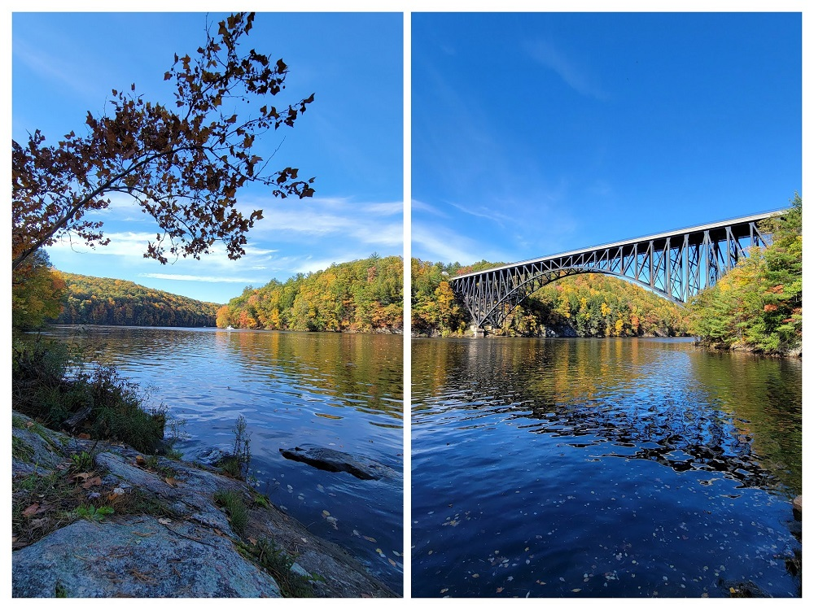

Connecticut River Connect
Biking from Brattleboro to Greenfield
Ride With GPS Links
This ride was not part of my ride351 challenge. It was peak fall colors season in this part of Vermont and Massachusetts, so I decided to rent a car (I know, booo!) and drive up to Bellows Falls. While my original plan was to ride from Bellows Falls to Greenfield and take the Amtrak back up, I realized that I might not make it in time, so decided to cut the ride short, and drove down to Brattleboro and started from there. This proved good, because I got to spend some time for lunch in Greenfield before taking the train back up.
 Strava Route - Brattleboro to Greenfield
Strava Route - Brattleboro to Greenfield
Starting from Brattleboro (after a confusing half hour spent finding parking), I headed down south on Route 142. There is a large lumber mill with logs being sprinkled with water. I had never seen that before, and thought that is how they make mulch. Turns out, that’s done to prevent fungal growth before the wood is dried for actual use.
 Lumber Yard, Brattleboro
Lumber Yard, Brattleboro
Moving a bit further south, I saw a really stunning image - orange-leaved tree, white fence, house, and green lawn. While I unfortunately did not take a landscape oriented picture, this vertical picture, along with one of my bike next to the Connecticut River looks pretty cool.
Orange-leaved tree next to a white picket fence
The next part of the ride was through a WMA (Wildlife Management Area) just across the Massachusetts border called Satan’s Kingdom! I had biked along the edge of these woods on Bostreal Day-2, so it was interesting to ride through it this time. I am not a believer in co-incidence, or supernatural activities, BUT!! the moment I entered the Satan’s Kingdom WMA, my front brake cable snapped. This is all that I am going to say in this matter. It was, however, a very beautiful wooded area.
 Approach to Satan’s Kingdom
Approach to Satan’s Kingdom
Biking on dirt roads, in Satan’s Kingdom
There was a very beautifully designed A-frame house somewhere on the route - the location of which, I am not going to intentionally disclose. With the orange leaves, and a river behind it, it looked classically ‘fall’.
After I crossed over into Massachusetts, I took Route 10 west, and turned onto Route 63 South in Northfield. The rail-line connecting Vermont to Massachusetts goes from under the bridge at this point. I took these two really cool wallpaper-worthy pictures while waiting at the red light. (It was awesome to zoom straight ahead on the protected bike-lane, while cars lined up - haha!)
Rail Line going to Vermont
The next portion of my ride was through Cabot’s Camp - you get a magnificent view of the French King Bridge from this point. The entire route to that point was excellent. I passed by a picnic spot, where a large group was having a barbeque - unfortunately I was not offered anything. The road also passed under the French King Bridge, and I got incredible views of the bridge from below. It truly is a majestic engineering marvel.
Riverview Picnic Area, Northfield MA
Below the French King Bridge, Erving MA
My personal discovery of Cabot Camp happened when I was planning the ride from Orange to Greenfield, and had to find a way to cross through as many towns as possible. Unfortunately, I could not go through Cabot Camp, as it would’ve added a lot of time to the ride, so I had skipped it. Turns out, that was probably a good decision, because the views of the approach to Cabot Camp, and the views of the French King Bridge from there were brilliant in the fall!
 Approaching Cabot Camp, Millers Falls (Montague), MA
Approaching Cabot Camp, Millers Falls (Montague), MA
 Two-photo panorama of the Connecticut River, and the French King Bridge from Cabot Camp
Turners Falls is a small historic mill town at the confluence of the Connecticut and Deerfield rivers, right across from Greenfield. With the post-industrial economic decline of mill-towns, this town was also affected. I saw an abandoned rusty water tower that seemed to be straight out of a movie set, and a strawberry field just across the river from it.
 Rusty looking water tower, and fields of strawberry
Rusty looking water tower, and fields of strawberry
It was towards the end of the ride, and I just had to get to Greenfield, catch a lunch, and be on my way back to Brattleboro where I had parked my rented car. The Connecticut River Bridge, which connects the southern parts of Turners Falls and Greenfield is closed to all traffic, but there is a rail-trail bridge for bikes and pedestrians very close-by.
I mentioned in a previous post that the John W. Olver Transit Center is a green building, with a very modern design. I got there, locked my bike, and had an entire pizza for lunch.
John W. Olver Transit Center, and me inside the Amtrak heading back to Brattleboro
I did not ride through any new towns within Massachusetts - nor through Vermont! On Day-2 of Bostreal, we biked through Vernon and Brattleboro, but as you hopefully realized through the pictures, it was 100% worth it.